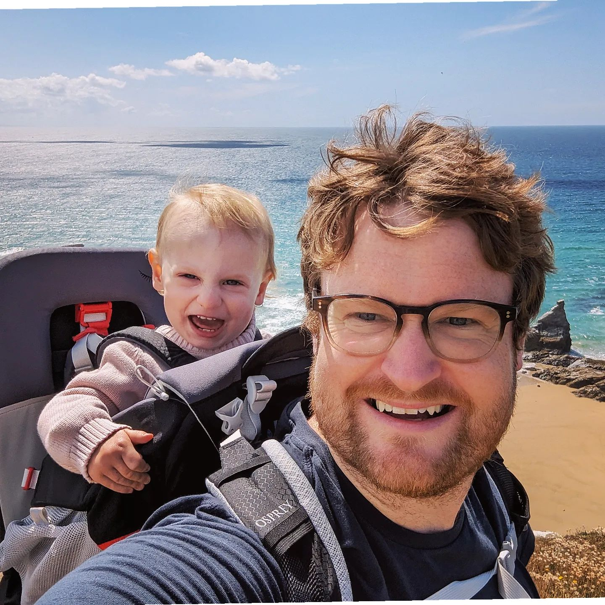

|  | Brendan O'Donoghue, Ph.D. |
Ph.D., M.S., Computer Science,
Stanford University,
January 2013
B.A., M.A., M.Eng., Information and Computer Engineering,
Gonville and Caius College,
Cambridge University, June 2007
Artificial intelligence
Machine learning
Reinforcement learning
Dynamic systems and control
Convex optimization
SCS: Large-scale convex quadratic cone solver.
K. Khetarpal, C. Vernade, B. O'Donoghue, S. Singh, and T. Zahavy
Transactions on Machine Learning Research (TMLR), 2023.
B. O'Donoghue
SIAM Journal on Optimization, 31(3), pp. 1999-2023, August 2021.
J. Zhang, B. O'Donoghue, and S. Boyd
SIAM Journal on Optimization, 30(4), pp. 3170-3197, November 2020.
J. De Fauw, et al.
Nature Medicine, 24(9), pp. 1342-1350, August 2018.
B. O'Donoghue, E. Chu, N. Parikh, and S. Boyd
Journal of Optimization Theory and Applications, 169(3), pp. 1042-1068, June 2016.
Y. Shi, J. Zhang, B. O'Donoghue, and K. Letaief
IEEE Transactions on Signal Processing, 63(18), pp. 4729-4743, September 2015.
IEEE 2016 SPS Young Author Best Paper Award.
Y. Wang, B. O'Donoghue, and S. Boyd
International Journal of Robust and Nonlinear Control, 25(10), pp. 1472-1496, July 2015.
B. O'Donoghue and E. J. Candès
Foundations of computational mathematics, 15(3), pp. 715-732, June 2015.
T. Goldstein, B. O'Donoghue, S. Setzer, and R. Baraniuk
SIAM Journal on Imaging Sciences, 7(3), pp.1588-1623, August 2014.
B. O'Donoghue, M. Peacock, J. Lee, and L. Capriotti
International Journal of Theoretical and Applied Finance, 17(3), pp. 1-14, May 2014.
S. Boyd, M. Mueller, B. O'Donoghue, and Y. Wang
Foundations and Trends in Optimization, 1(1), pp. 1-69, January 2014.
B. O'Donoghue, G. Stathopoulos, and S. Boyd
IEEE Transactions on Control Systems Technology, 21(6), pp. 2432-2442, November 2013.
J. Tarbouriech, T. Lattimore, and B. O'Donoghue
Advances in Neural Information Processing Systems (NeurIPS), 2023.
S. Flennerhag, T. Zahavy, B. O'Donoghue, H. van Hasselt, A. György, and S. Singh
Advances in Neural Information Processing Systems (NeurIPS), 2023.
B. O'Donoghue
Proceedings of the International Conference on Machine Learning (ICML), 2023.
T. Moskovitz, B. O'Donoghue, V. Veeriah, S. Flennerhag, S. Singh, and T. Zahavy
Proceedings of the International Conference on Machine Learning (ICML), 2023.
I. Osband, Z. Wen, S. Asghari, V. Dwaracherla, B. Hao, M. Ibrahimi, D. Lawson, X. Lu, B. O'Donoghue, and B. Van Roy
Advances in Neural Information Processing Systems (NeurIPS), 2022.
B. O'Donoghue and T. Lattimore
Spotlight Advances in Neural Information Processing Systems (NeurIPS), 2021.
T. Zahavy, B. O'Donoghue, G. Desjardins, and S. Singh
Spotlight Advances in Neural Information Processing Systems (NeurIPS), 2021.
B. O'Donoghue
Advances in Neural Information Processing Systems (NeurIPS), 2021.
D. Applegate, M. Díaz, O. Hinder, H. Lu, M. Lubin, B. O'Donoghue, and W. Schudy
Advances in Neural Information Processing Systems (NeurIPS), 2021.
B. O'Donoghue, T. Lattimore, and I. Osband
Proceedings of the 37th Conference on Uncertainty in Artificial Intelligence, (UAI), 2021.
T. Zahavy, A. Barreto, D. Mankowitz, S. Hou, B. O'Donoghue, I. Kemaev, and S. Singh
Spotlight Proceedings of the International Conference on Learning Representations (ICLR), 2021.
J. Zhang, J. Kim, B. O'Donoghue, and S. Boyd
Proceedings of the AAAI Conference on Artificial Intelligence, 35(12), 10887-10895, 2021.
B. O'Donoghue, I Osband, and C. Ionescu
Spotlight Proceedings of the International Conference on Learning Representations (ICLR), 2020.
B. O'Donoghue and C. J. Maddison
Advances in Neural Information Processing Systems (NeurIPS), 2019.
G. Swirszcz, B. O'Donoghue, and P. Kohli
Debugging Machine Learning Models Workshop, ICLR, 2019.
C. Qin, K. (Dj) Dvijotham, B. O'Donoghue, R. Bunel, R. Stanforth, S. Gowal, J. Uesato, G. Swirszcz, and P. Kohli
Proceedings of the International Conference on Learning Representations (ICLR), 2019.
J. Uesato, B. O'Donoghue, A. van den Oord, and P. Kohli
Proceedings of the International Conference on Machine Learning (ICML), pp. 5025-5034, 2018.
B. O'Donoghue, I. Osband, R. Munos, and V. Mnih
Oral Proceedings of the International Conference on Machine Learning (ICML), pp. 3836-3845. 2018.
B. O'Donoghue, R. Munos, K. Kavukcuoglu, and V. Mnih
Proceedings of the International Conference on Learning Representations (ICLR), 2017.
B. O'Donoghue, Y. Wang, and S. Boyd
Proceedings European Control Conference, pp. 3882-3888, Zurich, July 2013.
B. O'Donoghue, Y. Wang, and S. Boyd
Proceedings IEEE Multi-Conference on Systems and Control, pp. 424-431, September 2011.
B. O'Donoghue
Technical note, 2022.
V. Nair*, S. Bartunov*, F. Gimeno*, I. von Glehn*, P. Lichocki*, I. Lobov*, B. O'Donoghue*, N. Sonnerat*, C. Tjandraatmadja*, P. Wang*, et al.
(* Equal contribution). In submission, 2021.
T. Zahavy, B. O'Donoghue, A. Barreto, V. Mnih, S. Flennerhag, and S. Singh
Working draft, 2021.
E. Grefenstette, R. Stanforth, B. O'Donoghue, J. Uesato, G. Swirszcz, and P. Kohli
Working draft, 2018.
C. J. Maddison, D. Paulin, Y. W. Teh, B. O'Donoghue, and A. Doucet
Working draft, 2018.
K. (Dj) Dvijotham, S. Gowal, R. Stanforth, R. Arandjelovic, B. O'Donoghue, J. Uesato, and P. Kohli
Working draft, 2018.
E. Chu, B. O'Donoghue, N. Parikh, and S. Boyd
Stanford internal report, (2013).
B. O'Donoghue